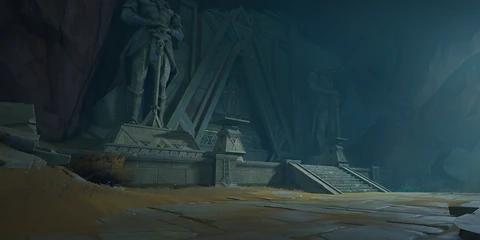

Sumeru · Ancient Civilizations
Gurabad
Gurabad was a desert city built under King Deshret and helped into power by the Jinni Liloupar. Its ruins, books, and later quests tell conflicting pieces of its rise, downfall, and buried legacy.

A city built under King Deshret
Gurabad was one city in the wider history of King Deshret’s desert, not another name for his entire realm. HoYoWiki’s Jinn record summarizes its rise and fall under the influence of Liloupar, the Mother of the Jinn. An inscription attributed to Ormazd says Deshret helped him overthrow Huvashtra and sent Liloupar to help gather the desert tribes and build the city.
The same inscription presents Gurabad as a prosperous settlement under Deshret’s guidance. Ormazd claims to dedicate one half of his kingdom, its subjects, and enslaved people to Liloupar, while submitting the other half to Deshret. These lines preserve a ruler’s account of his own reign; they do not give a full chronology of the city or explain every later change in its leadership.
A royal history retold as a Jinni’s tale
The two volumes of The Tale of Shiruyeh and Shirin tell a story about the rulers Kisra Parvezravan, Shirin, and Shiruyeh. Its shared description identifies it as a Jinni’s tale told to a shepherd, says its origin is unknown, and warns that it contains absurdities. It is an in-world story with a narrator, not a neutral court chronicle.
That framing matters because the story’s version of the family’s downfall shifts blame toward Shirin and Shiruyeh. Apocalypse Lost later reveals that the narrator, Liloupar, manipulated events across the same three generations. The books preserve a partial and self-serving version of her past; the quests supply information that changes how readers should interpret it.
Liloupar’s role in the city’s destruction
In Memories of Gurabad, Liloupar leads the Traveler through a chess-piece mechanism to the city’s buried ruins. A vision shows the earth swallowing Gurabad; another recalls the masked Shiruyeh and a revolt amid a city in darkness. Liloupar then admits that she raised Ormazd from shepherd to king and passed ruin from parent to child across three generations.
Her confession describes the use of Jinni spirits in machines, the exploitation that continued under the promise of ending slavery, and her own deliberate use of the Abyss to punish the dynasty. She accepts that the plan consumed Gurabad along with its rulers and followers. This is Liloupar’s testimony, spoken after she has decided to confront the consequences; it explains her role without making the novel’s every detail an objective record.
Ruins, inscriptions, and later visitors
The Temple of Gurabad and the ancient chessboard at Safhe Shatranj connect the city’s ruins to the surrounding Hadramaveth exploration. Completing Memories of Gurabad also makes previously unreadable desert tablets accessible. The region’s physical remains, the short inscriptions, and Liloupar’s visions are separate evidence; none supplies a complete civic history on its own.
The Dirge of Bilqis later takes Jeht and the Traveler through the Gurabad ruins on the way to the Eternal Oasis. That journey reveals more about Liloupar’s history with Nabu Malikata and King Deshret, while keeping Jeht’s immediate goal—burying her parents—at the center of the quest. It adds context for the Jinn and the desert, but it does not fill every gap in Gurabad’s dynastic timeline.
The disturbance beneath Gurabad
The Archon Quest As All Falls to Emptiness returns to Gurabad’s buried history. Liloupar says that after parting from the Traveler she merged with the land beneath the city to suppress a dark calamity. She says this force stirred the Jinn’s vengeance, and that she fought it until the Abyss went quiet after a change in a land to the west. She then slept until the later crisis brought the Traveler and Jeht back to Gurabad.
The Traveler wonders whether the western change could refer to Natlan and the defeat of Gosoythoth. The dialogue presents that connection as a question, not a confirmed answer. Liloupar calms the released Jinn and clears the sandstorm, but the deeper Abyssal presence, its origin, and the exact reason it fell silent remain unexplained.
What remains unresolved
The sources establish Gurabad’s connection to Deshret, Ormazd, the Jinn, Liloupar, and a dynastic collapse that ended with the city buried beneath the earth. They do not provide a year-by-year timeline, a reliable account from every faction, or a fully explained origin for the calamity below the ruins.
A grounded reading compares Ormazd’s inscription, the deliberately framed book tale, Liloupar’s confessions in the quests, and the modern dialogue about the Abyss. Keep the narrator and the date of each account in view; do not treat the Traveler’s proposed Natlan connection as settled history.
This is an original CoreGG reading guide, not an official HoYoverse article or a reproduction of the game text. Source links below identify the records used so you can check the original context.
Sources & references
Check these sources for the original game text and reference trail.